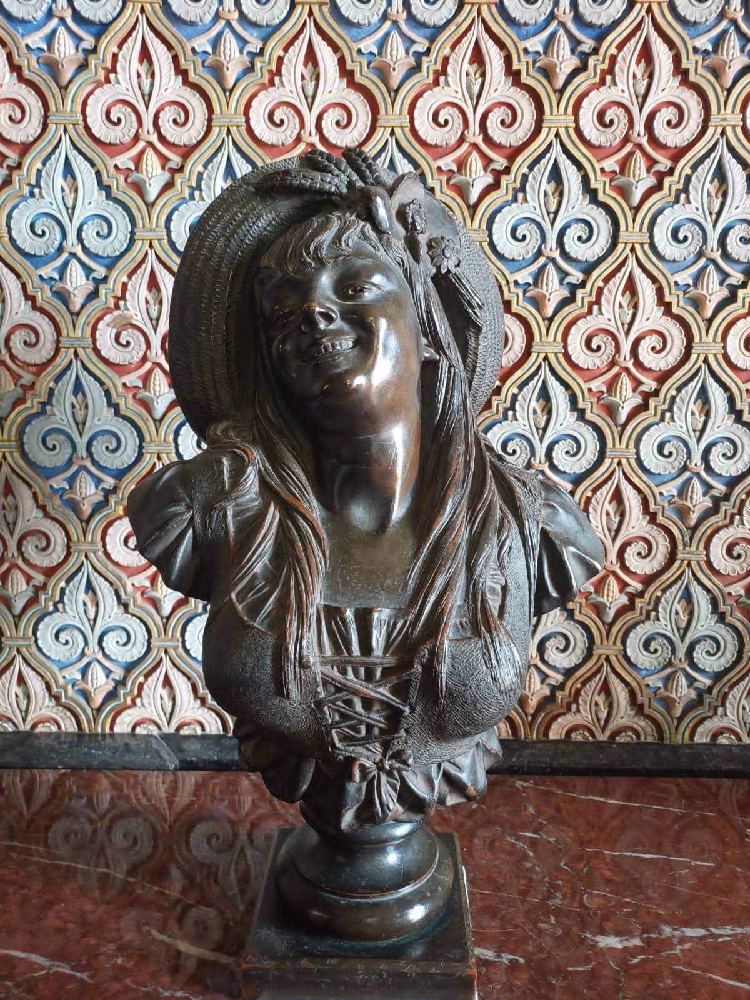

Bem-vinda
Você está pronta?
Antes de começar
um pequeno teste para saber se você é digna:
Você conhece essa pessoa?
Você conhece essa pessoa?
Olhe bem pra isso:
Obra prima
Espere...

É a minha futura namorada que está acessando essa página agora?
Sim, Você mesma cujo o nome começa com M
Se tudo funcionar como o programado você deveria estar ouvindo uma música de fundo.
Quando estiver ouvindo a música clique no botão.
Bom, então vamos lá...
eu queria que você soubesse de algumas coisas.
Fiz esse presente para você.
você merece muito mais que isso.
As vezes é difícil imaginar...
que alguém pode aparecer do "nada"...
e transformar completamente...
a nossa perspectiva de vida.
Assim como você fez com a minha.
Eu quero mostrar isso para você.
posso?
1. Mensagens

Achei que demoraria bastante tempo para sentir interesse em uma pessoa novamente.
mas você me mostrou que eu estava errado.
E quando digo interesse, é a vontade de conhecer, conversar e me envolver nos seus assuntos.
Conversas que são sempre muito agradáveis, parece que estou te conhecendo de novo, o brilho no olhar e a criação de expectativas ao falar contigo se mantém desde o primeiro dia.

Áudios A maneira que me prende na conversa é inexplicável, passaria facilmente horas ouvindo, soa como uma boa música para meus ouvidos.
2. Momentos marcantes
Essa é minha foto favorita sua.
Eu me apaixonei por você mais de uma vez.
Há pessoas nesse mundo que preferem a solidão, mas não suportaria passar por toda uma vida sem compartilhar minhas aventuras contigo. Mesmo com as dificuldades eu quero estar ao seu lado. Amar é olhar juntos na mesma direção e sinto que estamos no mesmo caminho.
Cada uma dessas situações foi quando me descobri apaixonado por você, e vou te contar quais foram:
- A primeira vez foi na festa da primavera, eu fui contra a minha vontade e lá conheci a dona do sorriso mais lindo. Me apaixonei logo de cara, mas a vida tinha me pregado algumas peças em que eu tive que disfarçar e tentar lutar contra. Pois é, caí no seu papinho. Esse foi o primeiro momento que me apaixonei por você.
- O primeiro encontro, me lembro perfeitamente: eu estava eufórico com o fato de termos trocado bem mais que palavras na festa. Corri para que tudo ficasse o mais perfeito possível e aconteceu. Você descendo do uber com um sorrisão encantador no rosto, sua calça preta florida e uma blusa branca. Conversamos no sofá como velhos amigos, uma química surreal. Logo após bebemos e nos despedimos, era cedo, mas meu peito doeu com a partida. Foi incrível.
- Quando saímos pela primeira vez, me fez lembrar todas as coisas que eu tinha procurado em uma parceira. Me diverti muito, éramos como crianças longe dos pais e percebi então que merecíamos uma chance.
E esse é só o começo.
O nosso começo.
3. O que você mudou em mim
Essa foto eu irei guardar para sempre, me faz lembrar de uma das risadas mais gostosas q tivemos juntos.
O que isso tem a ver, você se perguntaria? Então...
Antes de começarmos a conversar novamente, eu estava sem ânimo, completamente parado e um tanto desacreditado a respeito de sentimentos.
Mas sempre tem algo em nós que voltamos sempre melhores e mais fortes.
Para mim, estava fora de cogitação voltar a tentar algo novo
Com esse tempo mudei minha visão de mundo, enxerguei coisas jamais vistas e percebi que não adiantava lutar contra o inevitável.
Acho que alguém conseguiu uma vaga muito especial no meu coração.
Você quem me fez querer conquistar o mundo e ser feliz ao seu lado.
Você quem me fez querer voltar a fazer mais atividades físicas, para me manter saudável e com uma boa aparência para você.
As vezes me pego pensando no que teria acontecido se eu não tivesse te conhecido e agradeço ao criador por estar mais um dia ao seu lado.
Você me faz tão bem, então me responda mais em baixo

Obrigado por estar comigo.